Instalação
PyCharm
Já instalou o Python em seu computador? certo, agora so falta instalarmos uma IDE para começarmos a programar nosso primeiro código
Começando pelo começo
O primeiro passo assim como na instalação do Python é entrar no site do Pycharm, para isso você pode clicar aquiBaixando o Pycharm
Assim que entramos no site podemos ver um botão preto escrito baixar, e logo após podemos clicar nele como mostra a imagem: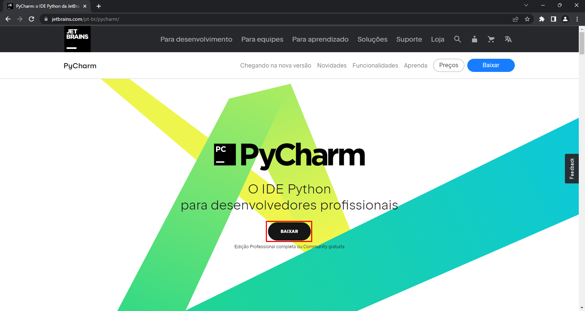
Então entraremos em outra pagina para baixar o arquivo, as versões de Windowns, macOS e Linux,
e em cada versão temos a opção de baixar o PyCharm professional ou o PyCharm Community, a versão
professional é uma versão paga, para empresas de desenvolvimento com mais de cinco pessoas na equipe,
enquanto a versão community é gratuita para desenvolvimento autêntico, para equipes pequenas e profissionais
autônomos, vomos baixar a versão community como ilustra a imagem:
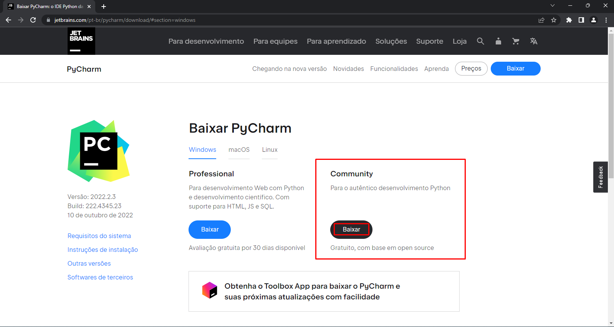
Logo depois você será redirecionado para uma pagina de agrecimento do download do PyCharm
e o download se iniciará:
Podemos então abrir o arquivo executável para iniciar a instalação do PyCharm, ao abrir
o instalador podemos clicar em next na primeira janela:
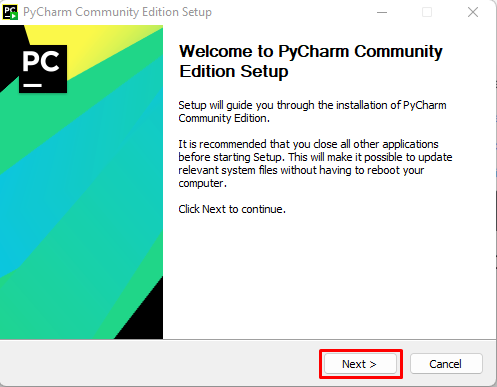
Depois podemos escolher onde queremos instalar o PyCharm, recomendo deixar a pasta padrão
e então podemos clicar em next:
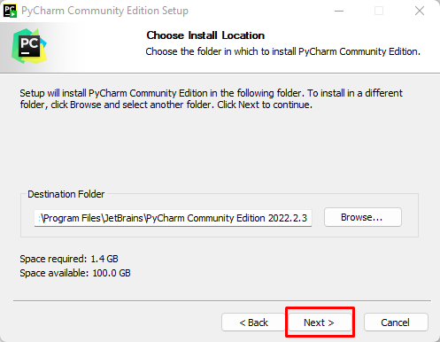
Na proxima janela teremos algumas opções como criar um atalho do Pycharm na área de trabalho
ou criar associação a arquivos .py, eu recomendo que vocês marquem todas como segue na imagem:
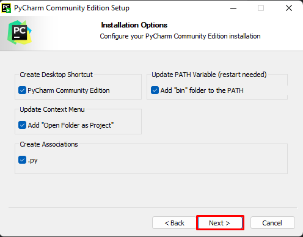
Então podemos no proximo passo clicar em install:
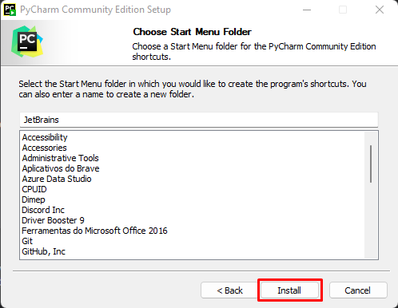
Na sequência irá para uma janela de instalação com uma barra de progresso até que entrará
na tela final e irá pedir para você reiniciar, iremos optar por reiniciar agora, como segue nas proximas imagens
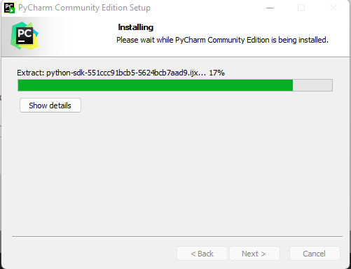
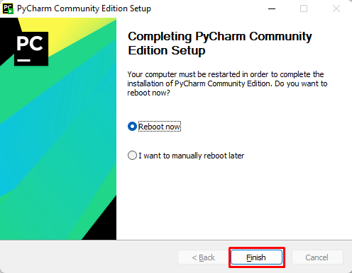
Então seu computador será reiniciado, a seguir podemos abrir o arquivo do PyCharm no desktop,
assim podemos então criar um projeto clicando em "New Project":
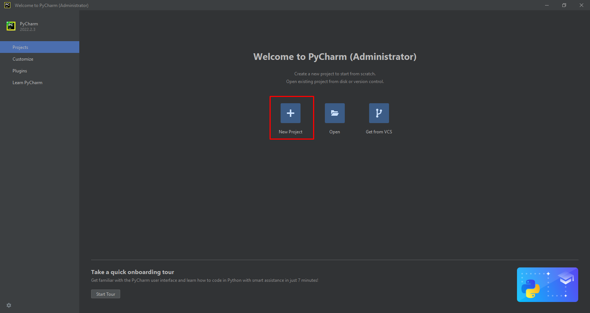
Seguidamente o PyCharm irá criar um arquivo .py, anteriormente a isso pedirá para você escolher
o local onde irá criar esse arquivo, podendo mudar clicando no ícone da pastinha no canto superior direito
e então podemos clicar em create para criarmos nosso primeiro projeto.
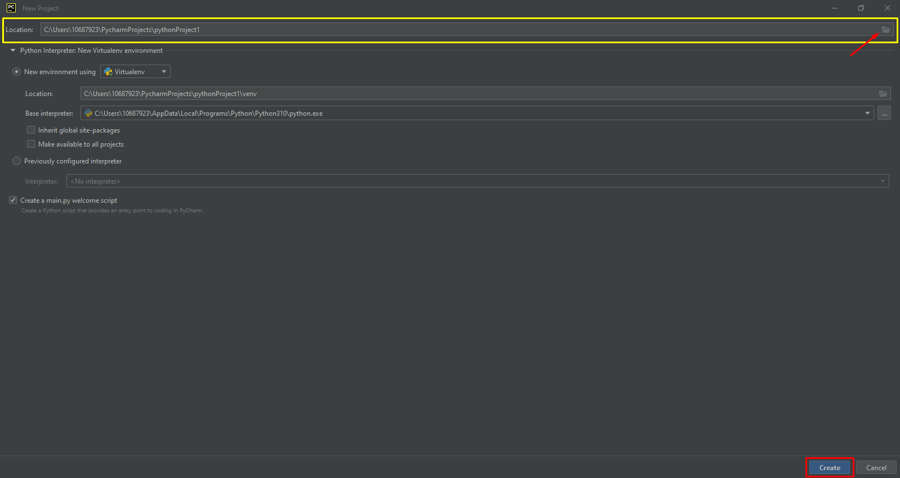
E assim temos a IDE pronta para ser usada, podendo assim codificar e produzir seus primeiros
cogigos em Python então aproveite e codifique sem moderação
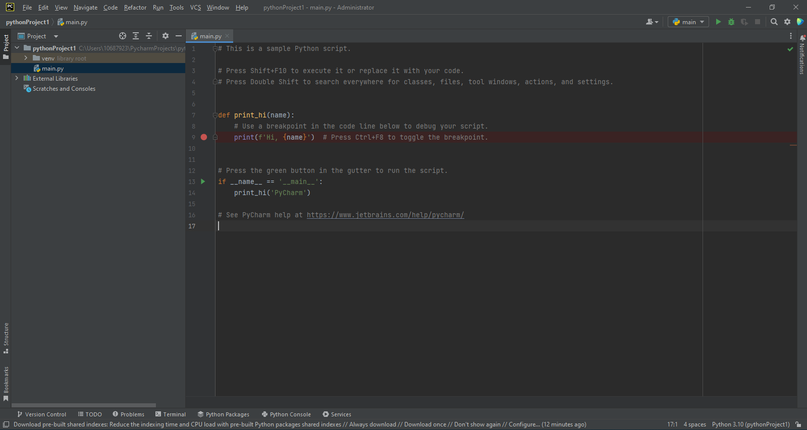